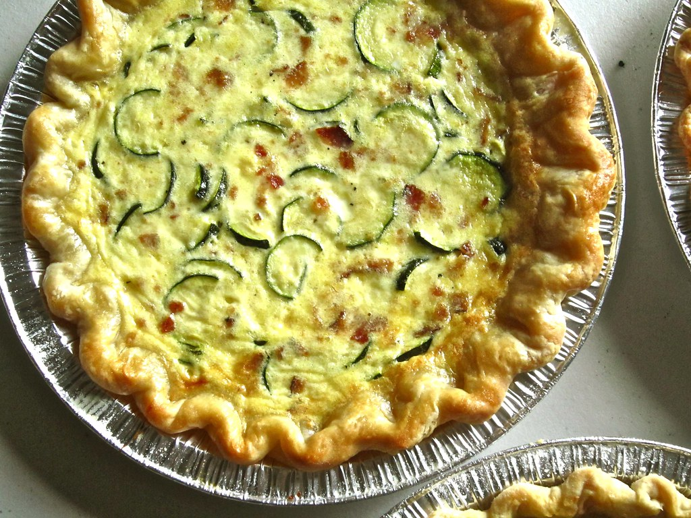

Home
Crustless Zucchini and Bacon Quiche

Description
This is a quick and easy crustless quiche that you can have for breakfast, lunch, or dinner!
Ingredients
- 8 slices of thick bacon
- 12 eggs
- 3 small Zucchini sliced 1/4 inch thick
- spices to taste
- salt and pepper to taste
- 2 cups shredded cheese (divided)
- 1/2 cup milk
Steps
- Heat oven to 350 dregrees
- Grease pie plate with oil or butter
- Lay sliced Zucchini in bottome of pie plate
- Lay or crumble bacon on top of Zucchini
- Spread 1 1/2 cup of cheese on top of Zucchini and bacon
- In a seperate bowl wisk eggs, spices, salt & pepper and milk together
- Pour egg mixture over Zucchini, bacon, and cheese
- Put in preheated oven for 25 minutes.
- After 25 minutes remove quiche and spread rest of cheese on top.
- Place back in oven on broil and cook until cheese on top is slightly browned.
- Remove from oven and let rest for 5 minutes then serve.